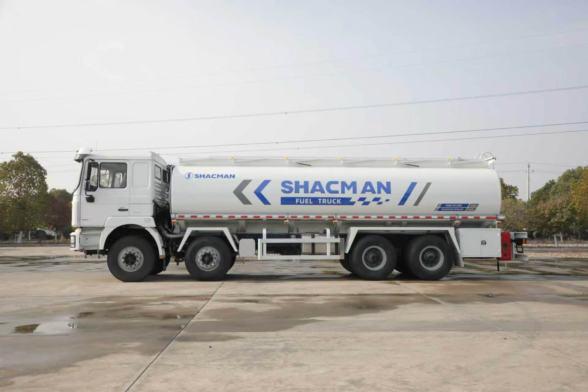
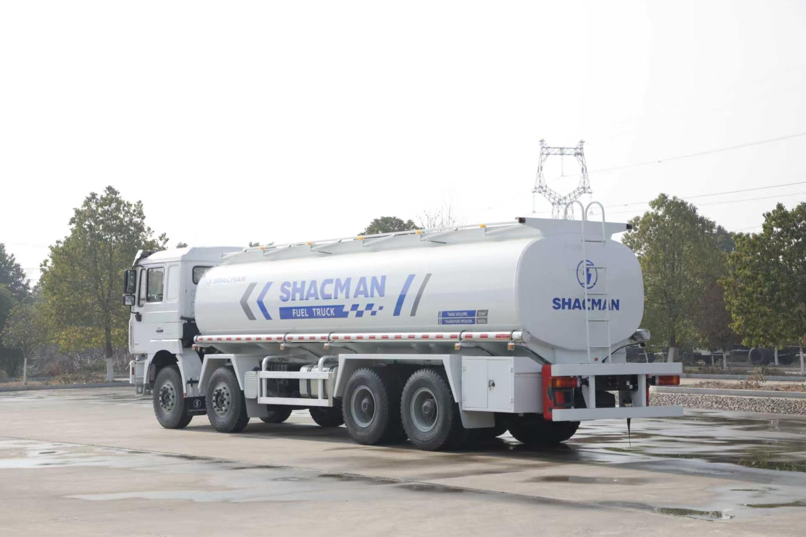

Direct answer: The reviewed SHACMAN F3000 fuel truck configuration combines an 8x4 chassis with a 30m3 Q235 steel tank divided into three compartments. The upper structure includes three manholes, three bottom valves, pump-in and pump-out capability, a flow meter, high-flow dispenser and nozzle, anti-static equipment and fire extinguishers. The chassis sheet identifies model SX5315GJYJT456 with a 380 HP Weichai engine and Euro II emissions. This is a reference configuration for DRC-oriented procurement; final legal compliance and exact equipment must be confirmed before order.
Why a 30m3 three-compartment tanker needs application-specific planning
A fuel truck is not selected only by nominal tank volume. The buyer must define the liquid carried, number of products, delivery points, pumping method, required measurement accuracy, loading facilities and whether the truck will distribute fuel to stations, construction sites, mines, generators or fleet depots. Three compartments can separate products or delivery batches, but compartment allocation must be agreed before tank manufacture.
For DRC operations, route surface and service distance can vary substantially between cities, project corridors and remote sites. The 8x4 chassis gives four axles for the completed vehicle, yet permissible axle loads and total operating weight remain subject to the approved vehicle and local rules. A supplier should check the intended fill volume, liquid density, tank mass and chassis distribution together.
Verified chassis specification
The following data comes from the supplied bilingual configuration sheet. It may be used for technical comparison, but the signed technical annex must confirm the production vehicle.
| Item | Reviewed configuration | Procurement check |
|---|---|---|
| Model and drive | SX5315GJYJT456, 8x4, left-hand drive | Confirm model identity, steering side and completed-vehicle approval. |
| Wheelbase | 1800 + 4575 + 1400 mm | Review turning space, body mounting and axle-load distribution. |
| Engine | Weichai WP10.380E22, 380 HP, Euro II | Confirm emissions acceptance, fuel quality and current availability. |
| Transmission | FAST 10JSD180 | Match ratios to route, gradients and completed operating weight. |
| Axles | MAN 9.5T front axle; 16T HD double-reduction rear axle, 5.262 ratio | Confirm axle ratings and legal loads in the final technical documents. |
| Frame | 850 x 300 mm, 8 + 7 mm | Check subframe interface and body-mounting design. |
| Suspension | Front and rear multi-leaf springs | Review road surface, ride, maintenance and load distribution. |
| Chassis fuel tank | 400 L steel tank | Confirm route range and separation from tanker piping and equipment. |
| Tires | 12.00R20 mixed tread, 12 + 1 | Confirm load index, tread, spare and local replacement availability. |
| Brakes | Dual-circuit air service brake, spring parking brake, engine exhaust brake | Confirm completed-vehicle braking and any destination requirements. |
Tank construction and compartment layout
The reviewed upper-body specification lists a 30m3 tank manufactured from Q235 steel. Tank body, end heads and internal baffles are each specified at 6mm. The tank is divided into three compartments and includes three European-standard manhole covers and three bottom valves.
These figures should be treated as the supplied design specification, not a universal recommendation for every petroleum product. Before production, identify each liquid, density, compatibility requirements and loading method. The body builder should confirm compartment sizes, piping routes, valve control, venting, cleaning access and any required tests in the approved drawing and technical annex.

Rear-left reference view showing the four-axle chassis, cylindrical tanker body, top access and rear protection arrangement.
Pump, meter and dispensing equipment
The specification includes pump-in and pump-out operation, a flow meter, a high-flow fuel dispenser and a high-flow nozzle. This indicates a truck intended not only to transport fuel but also to deliver it into receiving tanks or equipment. The buyer should state the required flow range, hose length, suction and discharge conditions, power source and whether metering documents are needed.
Do not assume that the words “high flow” define a guaranteed rate or metering tolerance. Pump model, rated performance, meter specification, hose and nozzle details should appear in the final equipment list. If the truck will serve mining or construction machinery, explain the largest receiving tank, expected daily delivery cycles and site access around the equipment.
Safety equipment listed in the reference configuration
The sheet lists an anti-static device, reflective markings, collapsible top guardrail, ladder, tool box, hazard warning light and two 5kg fire extinguishers with holders. The chassis description also specifies a box-type exhaust with spark arrester, protective grilles and a steel bumper. An anti-theft box is included around relevant upper-body equipment.
These are important physical features, but they are not a blanket certification for fuel transport in every jurisdiction. The buyer should identify the applicable DRC authority, fuel-transport rules, inspection process, warning labels and documentation. Any required emergency shutoff, bonding arrangement, spill-control equipment or additional signage should be confirmed before the tank drawing is approved.
Mounting details matter on difficult roads
The reference specification calls for rubber pads between the main frame and subframe, at least four positioning blocks and at least five sets of U-bolts. These details help explain how the tanker upper body is located and secured to the chassis. For operations involving uneven access roads, the final mounting design should be reviewed together with tank baffles, chassis movement and intended operating weight.
Pre-shipment inspection should include the mounting points, subframe, fasteners, piping supports and clearances around the axles, exhaust and chassis fuel tank. Inspection photos should document both sides, the rear, tank top, manholes, valves, pump cabinet, dispenser, meter, extinguishers, identification plates and tire markings.
What DRC fleet buyers should send with an RFQ
- Destination city or project area, import port and intended registration category.
- Fuel type, liquid density and whether different products must remain separated.
- Required total volume and preferred allocation of the three compartments.
- Loading source, receiving tanks, pumping direction, hose length and target flow requirement.
- Route distance, road surface, gradients, temperature and expected daily delivery cycles.
- Required meter, dispenser, nozzle, valves, emergency and anti-static equipment.
- Inspection, testing, documentation, spare-parts and operator-training requirements.
- Quantity and preferred EXW, FOB or CIF quotation basis.
Frequently asked questions
What tank construction is confirmed?
The reviewed configuration specifies a 30m3 Q235 steel tank with three compartments. Tank body, end heads and internal baffles are listed at 6mm.
Does the truck include dispensing equipment?
Yes. The sheet lists pump-in and pump-out capability, a flow meter, high-flow dispenser and high-flow nozzle. Exact brands and performance must be confirmed in the final specification.
Which safety items are included?
The listed items include bottom valves, anti-static equipment, reflective markings, a collapsible top guardrail, ladder, spark arrester, hazard warning light and two 5kg fire extinguishers.
Is it automatically compliant for fuel transport in DRC?
No. The configuration includes a DRC-specific identification plate, but current registration, hazardous-goods, inspection and operating requirements must be confirmed for the buyer's location.
Why is no price shown?
Price depends on the confirmed chassis, tank, dispensing equipment, safety requirements, destination, quantity and trade term. It is provided privately in a current quotation after these details are agreed.
Request a private F3000 8x4 fuel truck quotation
Send Andy the fuel type, compartment plan, route, dispensing requirement, destination and quantity. Technical configuration and current commercial terms will be confirmed privately.